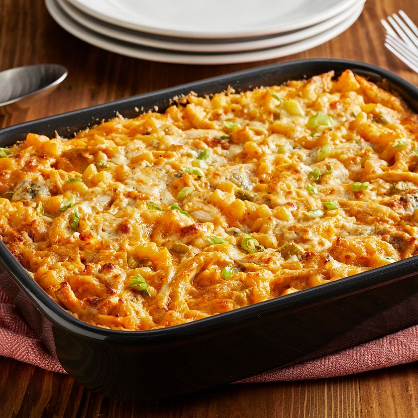
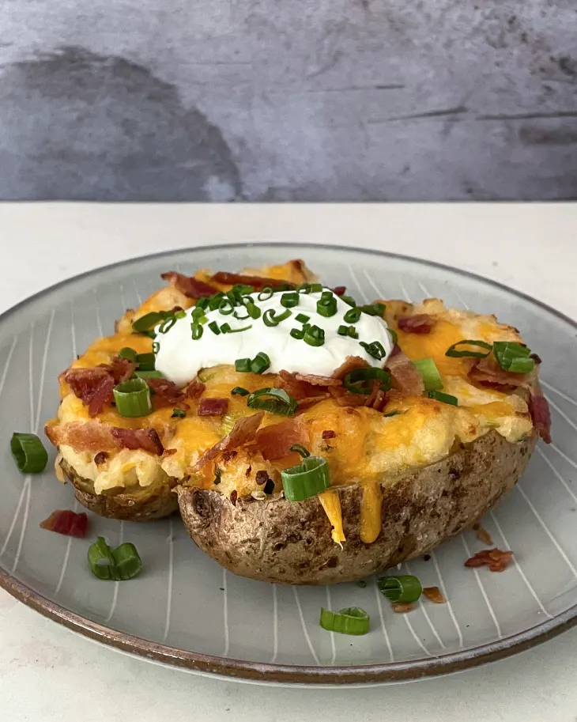

Justin's Recipe Website
Delicious Recipes
Garlic Chicken Rigatoni

Ingredients
- 1 (8 ounce) package rigatoni pasta
- 1 tablespoon salt
- 1 pound skinless, boneless chicken breasts, cut into bite-sized pieces
- 1 tablespoon herb-infused olive oil
- ¼ cup tapioca starch
- 1 teaspoon Italian seasoning
- ¼ teaspoon salt
- ⅛ teaspoon freshly ground black pepper
- ¾ cup water
- ⅓ cup sliced fresh mushrooms
- ¼ cup chopped marinated artichoke hearts
- 2 tablespoons chopped oil-packed sun-dried tomatoes
- 3 cloves minced garlic
- ⅓ cup Chardonnay wine
- ¼ cup heavy whipping cream
- 2 ounces shredded aged Cheddar cheese
Directions:
Directions
- Bring a large pot with water and 1 tablespoon salt to a boil. Cook rigatoni in the boiling water, stirring occasionally until tender yet firm to the bite, about 10 minutes. Drain and reserve pasta water.
- Meanwhile, combine tapioca starch, Italian seasoning, salt, and black pepper in a bowl. Add chicken pieces and toss to coat.
- Heat olive oil in a skillet until it shimmers. Add chicken pieces and cook until browned, about 5 minutes. You might be tempted to add more olive oil or butter, don't do this.
- Pour in reserved pasta water and add mushrooms, artichoke hearts, sun-dried tomatoes, and garlic. Cook about 5 minutes.
- Mix in white wine, cream and Cheddar cheese. Whisk until sauce is slightly thickened. Add rigatoni and toss to combine.
- Add rigatoni and toss to combine. Serve immediately.
Buffalo-Chicken-Mac-N-Cheese

INGREDIENTS
- 1 pound (16 ounces) elbow macaroni
- 1/2 cup unsalted butter
- 1/2 cup all-purpose flour
- 4 cups milk
- 4 cups shredded Cheddar cheese
- 1/2 cup plus 2 tablespoons Frank's RedHot® Original Cayenne Pepper Hot Sauce, divided
- 2 cups chopped cooked chicken
- 3 stalks celery
- 1/4 cup thinly sliced green onion, optional
- 1/2 cup crumbled blue cheese, optional
DIRECTIONS
- PREHEAT oven to 350F. Spray a 13x9-inch baking dish with no stick cooking spray; set aside. Cook macaroni as directed on package using minimum cook time. Drain well.
- MEANWHILE, melt butter in 3-quart saucepan on low heat. Whisk in flour; cook and stir until smooth. Gradually stir in milk. Bring to boil, stirring constantly. Boil 1 minute until mixture is hot and bubbly. Add cheese and 1/2 cup of the RedHot Sauce; stir until cheese is melted and mixture is smooth.
- ADD cooked macaroni, chicken and celery to cheese sauce; stir gently to coat well.
- POUR macaroni mixture into prepared baking dish. Sprinkle with green onions and blue cheese crumbles if desired.
- DRIZZLE top with remaining 2 tablespoons RedHot Sauce. Bake, uncovered, 15 to 20 minutes or until bubbly and lightly browned on top. Let stand 5 minutes before serving.
Loaded Baked Potato

Directions
- Arrange 2 shelves to divide the oven into thirds, then heat the oven to 400ºF. Meanwhile, wash and scrub 4 large russet potatoes. Prick each potato all over with a fork. Rub the potatoes all over with 1 tablespoon olive oil, then sprinkle with 1/4 teaspoon of the kosher salt. Line a rimmed baking sheet with aluminum foil, then place 6 slices bacon in a single layer on the foil.
- Place the bacon on the upper rack and the potatoes directly on the lower rack. Bake until the bacon is crisp and golden-brown, 15 to 20 minutes, and the potatoes have crisp skin and are fork-tender, about 1 hour.
- When the bacon is ready, immediately transfer to a clean cutting board. Cut crosswise into 1/4-inch-wide pieces.
- Meanwhile, shred 8 ounces cheddar cheese on the large holes of a box grater (about 2 cups). Cut 5 tablespoons unsalted butter into a few pieces and place in a large bowl. Thinly slice 3 medium scallions, keeping the whites and dark green parts separate. Finely chop 1 bunch fresh chives until you have 4 tablespoons. Transfer the scallion whites and 3 tablespoons of the chives to the bowl of butter. Reserve the scallion greens and remaining 1 tablespoon chives for garnish.
- When potatoes are ready, set aside for 5 minutes to cool slightly. Discard the foil from the baking sheet, then line the baking sheet with parchment paper. Cut a slit lengthwise most of the way down each potato, making sure the halves are still connected. Carefully scoop out the potato flesh and place in the bowl of butter, leaving about 1/4-inch potato flesh as the shell. Place the potato shells skin-side down on the baking sheet.
- Coarsely mash the potato-butter mixture directly in the bowl with a potato masher or fork until the butter is melted. Add half of the bacon, 1 cup of the cheese, 6 tablespoons of the sour cream, 1/4 cup milk, 1 teaspoon garlic powder, the remaining 3/4 teaspoon kosher salt, and 1/4 teaspoon white or black pepper. Mix thoroughly with rubber spatula until combined.
- Divide the mixture between the potato shells, mounding the mixture. Sprinkle with the remaining 1 cup cheese. Bake on the upper rack until the cheese is melted, about 8 minutes.
- Sprinkle with the remaining bacon and reserved scallion greens. Dollop with the remaining 6 tablespoons sour cream and sprinkle with the reserved chives.
Ingredients
- 6 slices regular or thick-cut bacon (about 7 ounces)
- 4 large russet potatoes (8 to 10 ounces each)
- 1 tablespoon olive oil
- 1 teaspoon kosher salt, divided
- 8 ounces sharp cheddar cheese, shredded (about 2 cups)
- 5 tablespoons unsalted butter
- 3 medium scallions
- 1 bunch fresh chives
- 3/4 cup sour cream, divided
- 1/4 cup whole or 2% milk
- 1 teaspoon garlic powder
- 1/4 teaspoon freshly ground white pepper or black pepper
Return to top